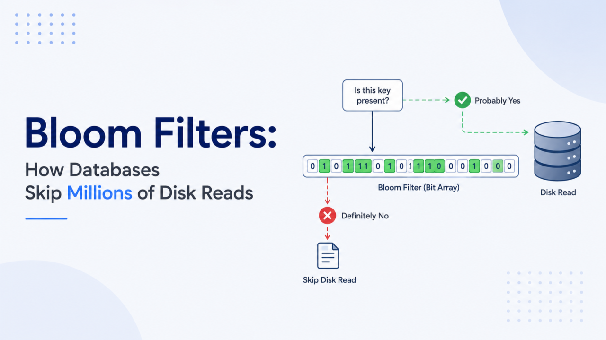

Bloom Filters: How Databases Avoid Millions of Unnecessary Disk Reads
Ashmita Pandey · · Databases · System Design

Hello everyone 👋
If you've worked with databases or distributed systems, chances are you've come across Bloom Filters.
At first, Bloom Filters can seem a little unusual.
They can tell you whether an element might exist in a set, but they don't actually store the elements themselves.
So how does that work?
And more importantly, why are Bloom Filters useful for databases and other large-scale systems?
In this article, we'll explore:
- What a Bloom Filter is
- How Bloom Filters work
- How hash functions are used
- Why false positives occur
- Why false negatives are impossible
- How Bloom Filters reduce unnecessary disk reads
- Where Bloom Filters are used
- What Counting Bloom Filters are
- When Bloom Filters are not the right choice
What Is a Bloom Filter?
A Bloom Filter is a probabilistic data structure used to test whether an element belongs to a set.
It can return two possible answers:
- Definitely not present
- Probably present
The important part is the guarantee behind these answers.
If a Bloom Filter says that an element is not present, it is guaranteed to be absent.
However, if it says that an element is probably present, there is a possibility that it is actually not present.
This is known as a false positive.
There are no false negatives.
This property is what makes Bloom Filters useful for avoiding expensive operations such as database lookups, disk reads, and network requests.
The Basic Idea
Consider a simple example.
Suppose an application receives a request to fetch a user by ID.
The application could directly query the database every time.
But what happens if the user doesn't exist?
The database still has to perform the lookup before returning:
User not foundNow imagine if we could perform a much cheaper check before querying the database.
Something that could tell us:
This user is definitely not present.
In that case, we can skip the database lookup completely.
This is one of the problems Bloom Filters help solve.
They don't replace the database.
Instead, they act as a first layer of filtering before an expensive operation.
How Bloom Filters Work
A Bloom Filter consists of two main components:
- A bit array
- Multiple hash functions
Initially, all bits in the array are set to 0.
For example:
0 0 0 0 0 0 0 0 0 0 0 0Now suppose we want to insert:
appleWe pass "apple" through multiple hash functions.
Assume the hash functions return:
2
7
11We set those positions to 1.
The array now becomes:
0 0 1 0 0 0 0 1 0 0 0 1Notice that we haven't stored the actual value:
appleWe only stored the information that certain positions in the bit array are set.
This is one of the reasons Bloom Filters require very little memory.
Checking Whether an Element Exists
Now suppose we want to check whether:
appleexists in the set.
We run the same hash functions again.
They return:
2
7
11We check those positions in the bit array.
All three positions contain 1.
So the Bloom Filter says:
Probably presentBut now consider a different situation.
Suppose we search for:
bananaand the hash functions return:
2
5
11If position 5 contains 0, we immediately know:
banana is definitely not presentThere is no need to query the database.
Why False Positives Happen
This is the most important part to understand about Bloom Filters.
Suppose we insert:
cat
dogEach element is passed through the hash functions, which set different positions in the bit array.
Now suppose we search for:
foxFox was never inserted.
However, it is possible that the hash functions for "fox" point to positions that were already set to 1 by "cat" and "dog".
For example:
cat → 2, 5, 7
dog → 1, 3, 5
fox → 1, 5, 7All positions required for "fox" are already set to 1.
The Bloom Filter therefore says:
Probably presentBut "fox" was never inserted.
This is a false positive.
The important point is that the Bloom Filter has not produced an incorrect database result.
The database can still perform the actual lookup and return:
Not foundThe false positive only means that we performed an unnecessary lookup.
Why False Negatives Are Impossible
Now consider the opposite situation.
Suppose an element was actually inserted into the Bloom Filter.
When it was inserted, all of its hash positions were set to 1.
Those bits may also be shared by other elements, but they cannot become 0 in a standard Bloom Filter.
Therefore, when we later check that element, all of its required positions will still be 1.
The Bloom Filter can therefore never say:
Definitely not presentfor an element that was actually inserted.
This is why Bloom Filters have:
No false negatives.
The Space Advantage
Another important property of Bloom Filters is their memory efficiency.
Suppose we need to track 10 million elements.
A traditional hash set needs to store the actual keys and the associated data structures.
The memory requirement can be around 1 GB in this example.
A Bloom Filter configured for a 1% false positive rate can require roughly 12 MB.
That's around 80× less memory.
The Bloom Filter doesn't store the original keys.
It only stores bits.
The exact memory requirement depends on:
- Number of elements
- Size of the bit array
- Number of hash functions
- Desired false positive rate
There is therefore a trade-off between memory usage and the probability of false positives.
How Bloom Filters Help Databases
Now let's connect this to database systems.
Consider a database that stores data across multiple files on disk.
A query arrives asking for a particular key.
Without a Bloom Filter, the database may need to check multiple files to determine whether the key exists.
Disk I/O is expensive.
So instead, the database can maintain a Bloom Filter for each file.
Before reading the file, it checks the Bloom Filter.
If the result is:
Definitely not presentthe database skips that file.
If the result is:
Probably presentthe database performs the actual lookup.
This means the Bloom Filter does not tell the database where the data is.
It simply tells the database:
You don't need to look here.
This can significantly reduce unnecessary disk reads.
Where Are Bloom Filters Used?
Bloom Filters are not just a theoretical data structure.
They are used in several large-scale systems.
Apache Cassandra
Cassandra uses Bloom Filters to determine whether an SSTable might contain a particular key before performing an expensive read.
If the filter says the key is definitely absent, Cassandra can skip that SSTable.
Google BigTable
Bloom Filters can be used to avoid unnecessary reads from storage files when the requested data is not present.
Redis
Redis provides Bloom Filter functionality through RedisBloom.
Applications can use Bloom Filters to determine whether a key might exist before performing an expensive database lookup.
Google Chrome
Bloom Filters have also been used for URL-related security checks, where a local filter can determine whether a URL might require further verification.
CDNs
Bloom Filters can also be used in caching systems to identify whether an object has been requested before.
This can help avoid filling cache space with objects that are rarely accessed.
Counting Bloom Filters
There is one important limitation of a standard Bloom Filter.
It does not support deletion.
Suppose two elements happen to use the same bit.
A → bit 5
B → bit 5 The bit becomes:
bit 5 = 1 Now suppose we remove A.
If we simply change bit 5 back to 0, we would also remove the information that B was inserted.
That could introduce a false negative.
Counting Bloom Filters solve this problem by replacing each bit with a small counter.
Instead of:
0 1 0 1 1 we can have:
0 2 0 1 3 When an element is inserted, the corresponding counters are incremented.
When an element is removed, they are decremented.
This allows deletion while maintaining the membership information.
The trade-off is additional memory usage.
When Should You Use a Bloom Filter?
Bloom Filters work particularly well when:
- You have a large number of elements.
- Membership checks are frequent.
- The underlying operation is expensive.
- Memory efficiency is important.
- False positives are acceptable.
For example:
Bloom Filter
↓
Definitely not present?
↓
Skip expensive operation
Probably present?
↓
Perform actual lookupThis pattern is useful for databases, caches, storage systems, search systems, and distributed applications.
When Bloom Filters Are Not the Right Choice
Bloom Filters are not suitable for every problem.
When you need the actual data
A Bloom Filter only answers a membership question.
It cannot return the stored object.
If you need:
user_id → user detailsyou still need a database, hash map, or another data structure.
When false positives are unacceptable
A false positive can cause an unnecessary lookup.
If even that possibility is unacceptable for your application, another approach may be more appropriate.
When frequent deletion is required
Standard Bloom Filters don't support deletion.
Counting Bloom Filters can solve this problem, but they require additional memory.
When the dataset is small
If you only have a small number of elements and they can easily fit into memory, a regular hash set may be simpler.
Not every performance problem requires a probabilistic data structure.
What Makes Bloom Filters Useful?
The interesting part about Bloom Filters is that they don't try to answer the complete question.
They don't tell us:
"Is this element definitely present?"
Instead, they answer a slightly different question:
"Can I confidently say that this element is not present?"
That small change in the problem makes it possible to use very little memory while eliminating many expensive operations.
The trade-off is straightforward:
A false positive can cause extra work.
A false negative is impossible.
This makes Bloom Filters particularly useful as a first layer before expensive operations.
Final Thoughts
Bloom Filters are a good example of how a relatively simple data structure can have a significant impact on system performance.
They combine:
- Bit arrays
- Hash functions
- Probabilistic membership testing
- Very low memory usage
- No false negatives
to reduce unnecessary database, disk, and network operations.
The important lesson is not just how Bloom Filters work.
It is the design principle behind them:
You don't always need to make an expensive operation faster. Sometimes, the better approach is to avoid performing it in the first place.
Understanding this kind of trade-off becomes increasingly important when designing systems that need to handle large amounts of data and high request volumes.